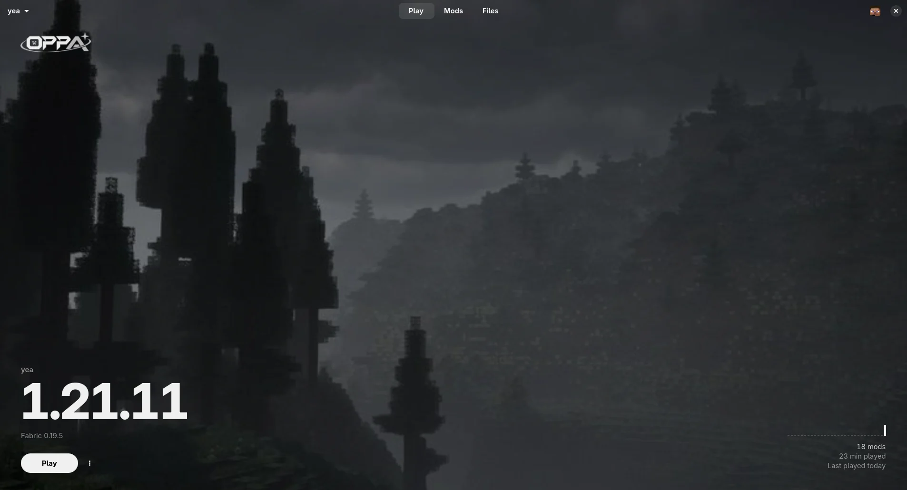
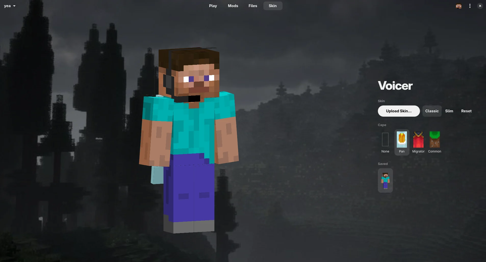

What it does
- Sign-in
- Microsoft account, stays signed in
- Instances
- Vanilla, Fabric and Quilt, any version
- Java
- Uses the one you have, or downloads the right one
- Mods
- Search Modrinth, install with dependencies
- Files
- Mods, shaders, resource packs, worlds and screenshots in one place
- Skin
- Upload, switch arm width and pick a cape, with a 3D preview
- In game
- A HUD you can drag and resize, block overlay, zoom and free look, for 1.21.1 to 26.3
